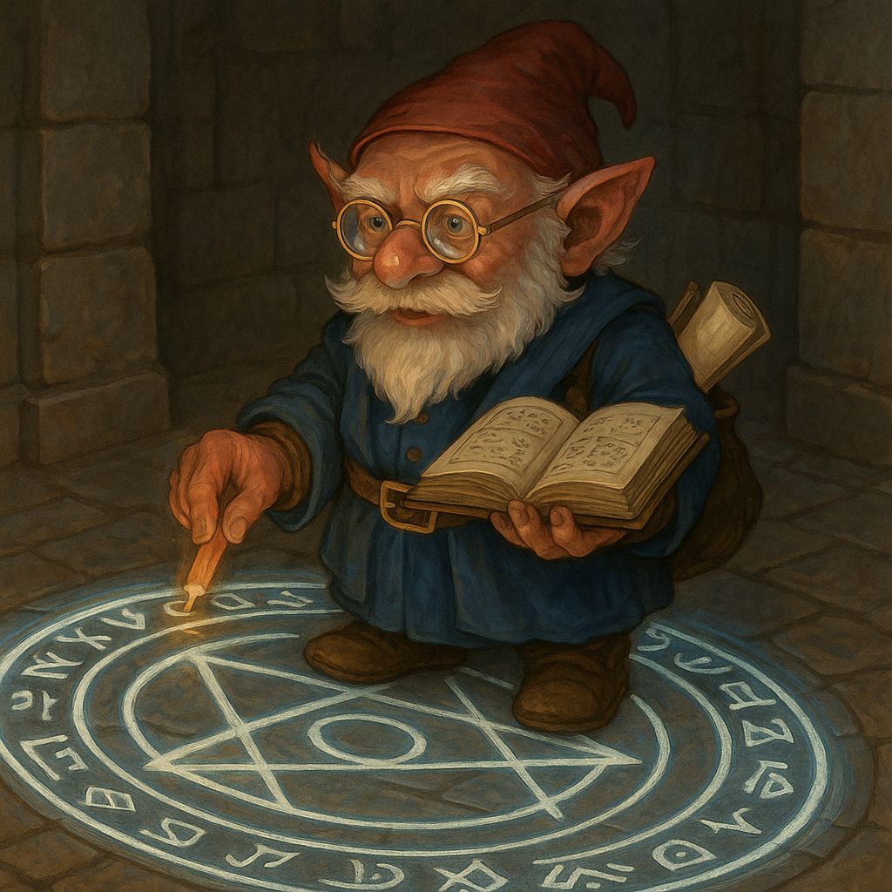

The air inside the Shattered Rune smells of old parchment, warm wax, and something faintly electric. Gimble looks up from the glowing circle, chalk still in hand, and offers a quick, distracted smile.